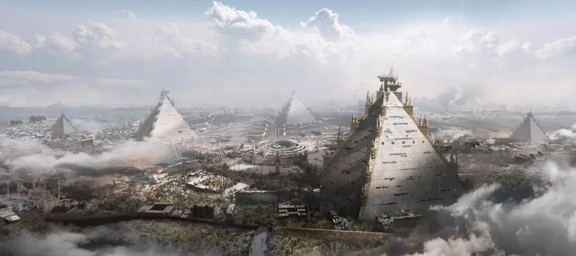
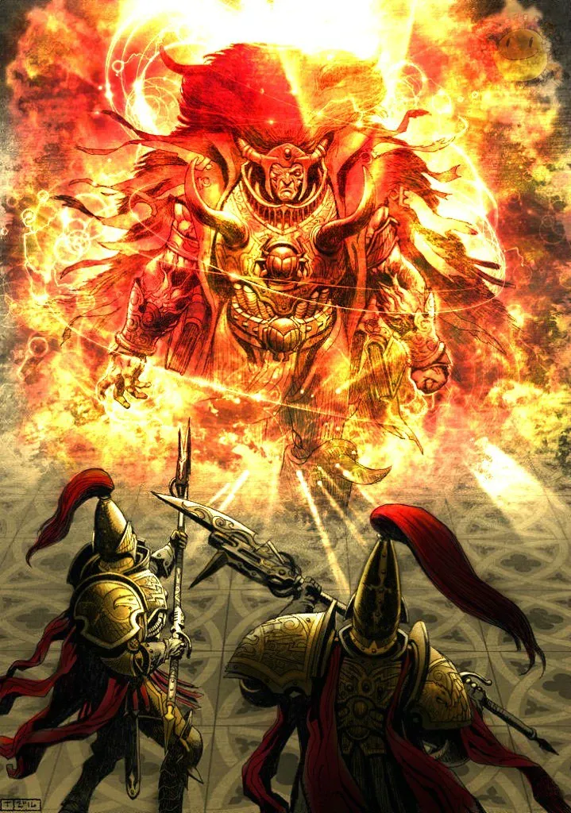
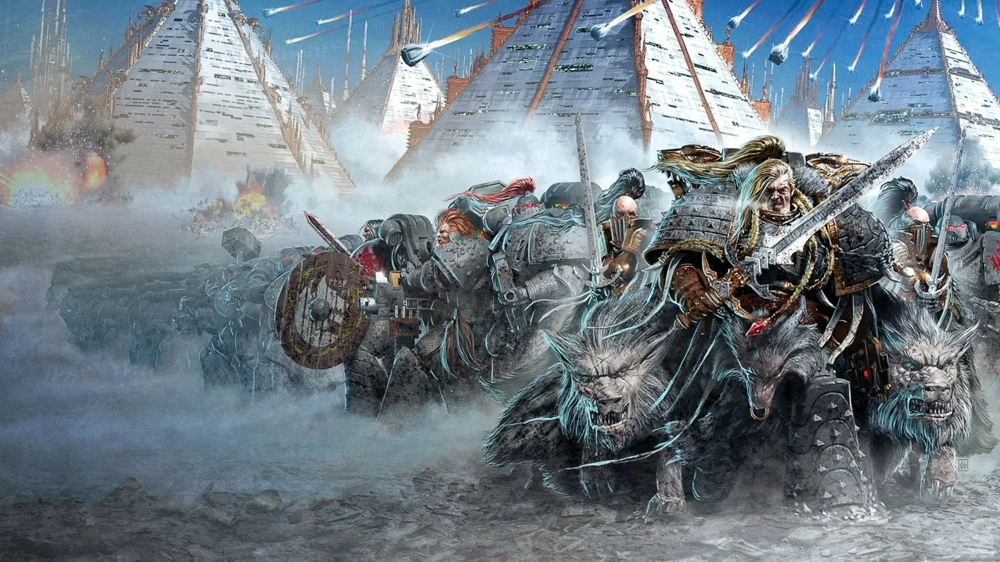
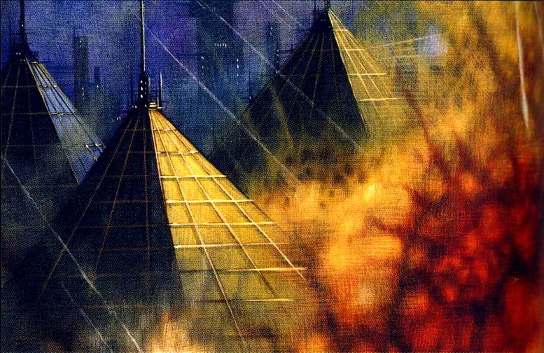
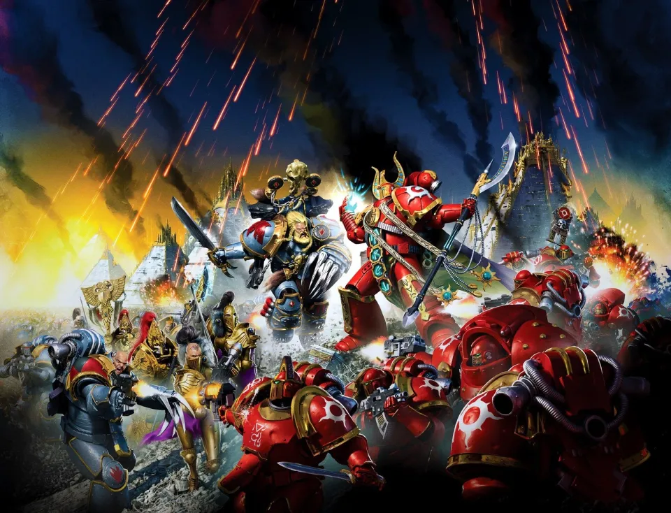
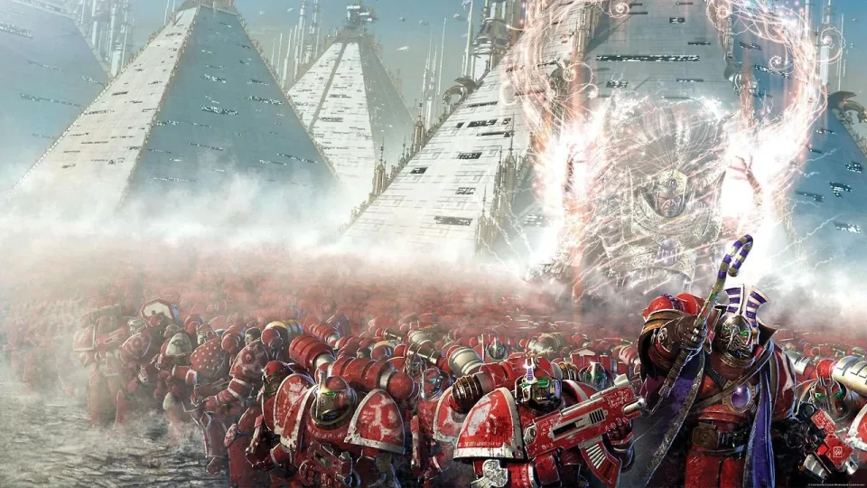
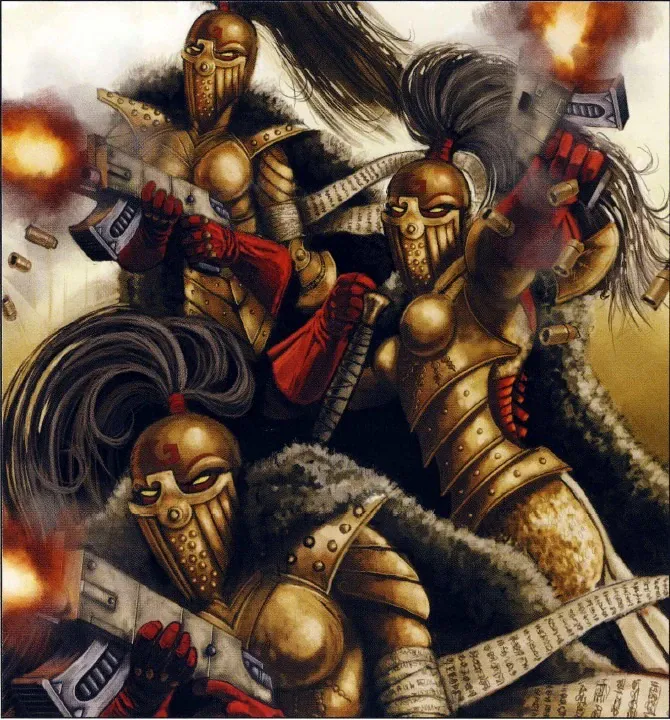
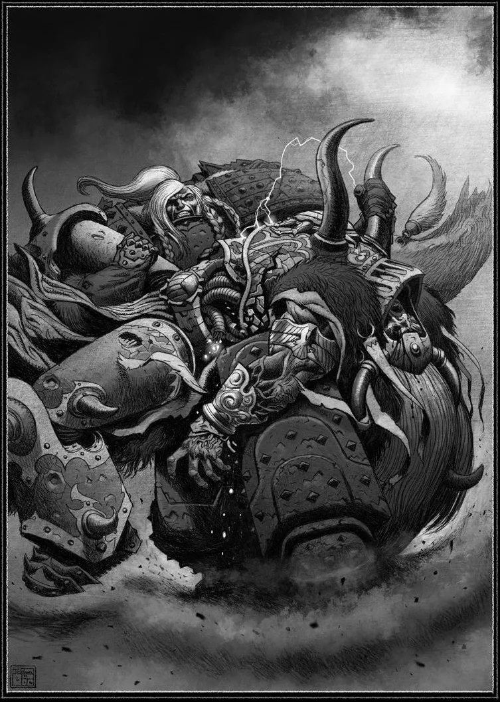
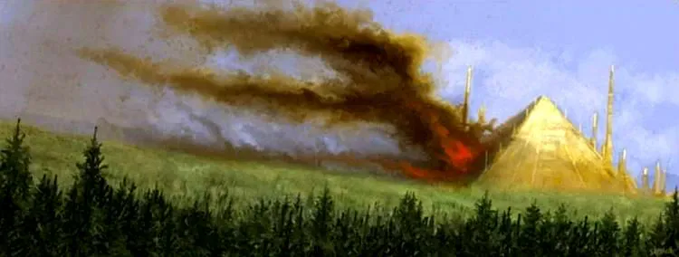
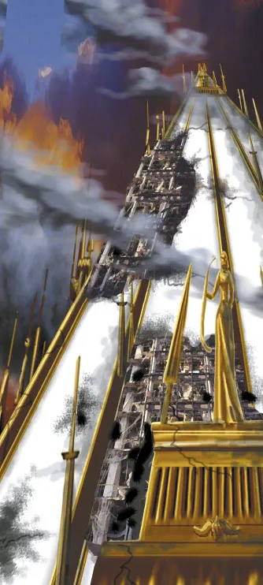

01ภาพรวม
Prospero (พรอสเพโร) เป็นดาวที่ประชาชนไม่กลัวผู้มีพลังจิต — ตรงกันข้าม พวกเขายกย่อง psyker เป็นผู้นำ เมื่อทารก Primarch ที่ชื่อ Magnus ตกลงมาที่นี่ เขาก็เติบโตเป็นนักเวทที่ทรงพลังที่สุดในกาแล็กซีรองจากจักรพรรดิ
เหตุการณ์ที่ถูกเรียกว่า การเผา Prospero (หรือ Battle / Scouring / Fall of Prospero) คือการที่ Space Wolves บุกทำลายดาวบ้านเกิดของ Thousand Sons ในช่วงต้น Heresy เป็นหนึ่งในโศกนาฏกรรมที่น่าเศร้าที่สุดของยุค 30K เพราะทั้งสองฝ่ายต่างคิดว่าตัวเองภักดีต่อจักรพรรดิ

02ต้นเรื่อง: Legion ของนักเวท
- คำสาปเนื้อหนัง (Flesh-Change) — พันธุกรรมของ Thousand Sons ไม่เสถียร ทำให้ทหารกลายพันธุ์จนเหลือกำลังพลเพียงพันนาย (ที่มาของชื่อ "Thousand Sons") Magnus หาวิธีรักษาได้ด้วยวิธีที่ไม่มีใครรู้ — ภายหลังเปิดเผยว่าเขาทำข้อตกลงกับพลังใน Warp โดยไม่รู้ว่าคือ Tzeentch
- คำเตือนที่ไม่ฟัง — จักรพรรดิเล่าความจริงเรื่อง Warp และเทพ Chaos ให้ Magnus ฟังเพียงคนเดียว Magnus ทำทีรับปากเลิกใช้เวท แต่แอบสอน Legion ต่อ
- ศัตรูในหมู่พี่น้อง — Leman Russ, Mortarion และ Corax ไม่ไว้ใจ Magnus มาตลอด Russ เรียกพวกเขาว่า "พ่อมด"
- สภา Nikaea (001.M31) — จักรพรรดิห้ามใช้เวทมนตร์และยุบ Librarian ทุก Legion พร้อมเตือน Magnus ว่า "ถ้าเจ้ายุ่งกับ Warp อีก ข้าจะทำลายเจ้า และลบชื่อ Legion ของเจ้าออกจากบันทึก" (ดู Great Crusade)
03คำเตือนที่กลายเป็นหายนะ
ขณะ Horus ถูกพิธีกรรมบน Davin ล่อลวง Magnus มองเห็นทุกอย่างผ่านการทำนายและพยายามช่วยในมิติ Warp แต่ไม่สำเร็จ เขาจึงตัดสินใจเตือนจักรพรรดิ แทนที่จะใช้ Astropath ตามกฎ เขากับนักเวทชั้นสูงร่วมกันร่ายเวทครั้งใหญ่ส่งจิตไปถึง Terra โดยตรง

เวทของ Magnus ทะลวงเกราะพลังจิตรอบพระราชวัง และพังเกราะป้องกันของโครงการลับใต้พระราชวัง — ทางเชื่อมสู่ Webway ที่จักรพรรดิสร้างมาตลอดหลายปีเพื่อให้มนุษย์เดินทางได้โดยไม่ต้องผ่าน Warp ปีศาจทะลักเข้ามาในทางเชื่อมนั้นทันที Custodes และ Sisters of Silence ต้องเข้าไปรบใน Webway (สงครามที่ภายหลังเรียกว่า War in the Webway) และจักรพรรดิต้องนั่งบน Golden Throne เพื่อกั้นประตูไว้ด้วยพลังจิตของตัวเอง
นักวิเคราะห์หลายคนมองว่าความเสียหายจากเวทของ Magnus ร้ายแรงพอ ๆ กับการทรยศของ Horus — ความฝันของจักรพรรดิที่จะปลดมนุษย์จากการพึ่ง Warp พังลงในพริบตา และพระองค์ถูกตรึงไว้ที่บัลลังก์ตั้งแต่ก่อน Horus จะมาถึง
04คำสั่งที่ถูกบิดเบือน
จักรพรรดิโกรธมาก พระองค์สั่ง Leman Russ ให้นำตัว Magnus มา Terra เพื่อรับการพิพากษา — จับกุม ไม่ใช่ประหาร Russ นำทั้ง Legion ไปพร้อม Custodes ของ Constantin Valdor, Sisters of Silence และเรือ Black Ship สำหรับขนตัว psyker ที่ถูกจับ
แต่ระหว่างทาง Horus ส่งทูตของ Sons of Horus ไปพบ Russ และโน้มน้าวว่า Magnus เป็นภัยร้ายแรงเกินกว่าจะจับเป็น ต้องทำลายให้สิ้น Russ ซึ่งเกลียดเวทมนตร์อยู่แล้วจึงเปลี่ยนภารกิจเป็นการลงทัณฑ์ — Horus ได้กำจัดพี่น้องที่ทรงพลังสองกองในคราวเดียว เพราะ Thousand Sons จะพังและ Space Wolves จะบอบช้ำ
ส่วน Magnus เมื่อรู้ตัวว่าถูก Tzeentch หลอกใช้ เขารู้สึกผิดอย่างมาก และตัดสินใจรับโทษ เขาไม่เตือน Legion และไม่ให้เตรียมป้องกัน — ยังใช้พลังปิดบังไม่ให้ใครรู้ว่าทัพกำลังมา
05การรบที่ Tizca
ยิงถล่มจากวงโคจร
กองเรือของ Space Wolves ยิงถล่ม Tizca โดยไม่มีการประกาศ Thousand Sons ที่ไม่รู้ตัวต้องรีบตั้งรับท่ามกลางซากเมือง
Space Wolves บุก
Space Wolves, Custodes และหุ่นรบของ Mechanicum ลงจอดและบุกเข้าเมือง Sisters of Silence ทำให้พลังเวทของศัตรูอ่อนลงทุกที่ที่พวกเธอไป
Ahriman นำการป้องกัน
เมื่อ Magnus ไม่ออกมา Ahzek Ahriman หัวหน้า Librarian นำ Thousand Sons ตั้งรับ หลายคนลังเลที่จะใช้เวทเพราะคำสั่งจาก Nikaea แต่เมื่อพี่น้องล้มตายลงเรื่อย ๆ จึงต้องปลดปล่อยพลังทั้งหมด
Magnus ออกรบ
Magnus เห็นลูกน้องถูกสังหาร จึงกลับมานำการรบเอง และในที่สุดก็เผชิญหน้ากับ Leman Russ
การดวลของสองราชา
Russ ชนะการดวลด้วยการยกร่าง Magnus ขึ้นแล้วหักกระดูกสันหลังบนเข่า ในวินาทีสุดท้าย Magnus ยอมรับข้อเสนอของ Tzeentch ร่างของเขาและ Thousand Sons ที่เหลือหายวับไปจาก Prospero






06หลังการรบ


- Thousand Sons เหลือราวหนึ่งในสิบ — Tzeentch พาผู้รอดชีวิตไปยัง Planet of the Sorcerers ใน Eye of Terror
- Legion ที่ 8 ของ Horus — Magnus รู้สึกว่าจักรพรรดิทรยศเขาก่อน จึงประกาศเข้ากับ Horus Thousand Sons กลายเป็นหนึ่งใน 9 Legion ทรยศ
- ความรู้ที่สูญหาย — ห้องสมุดของ Tizca ที่รวมความรู้จากทั่วกาแล็กซีถูกเผาเกือบทั้งหมด
- Space Wolves บอบช้ำ — ไม่นานหลังจากนั้น Alpha Legion ซุ่มโจมตี Space Wolves ที่ยังไม่ฟื้นตัว ทำให้พวกเขามาถึง Terra ช้าจนพลาดการปิดล้อม
- Rubric of Ahriman — หลัง Heresy คำสาปกลายพันธุ์กลับมาอีก Ahriman ร่ายเวท "Rubric" เพื่อรักษา แต่กลับเปลี่ยนพี่น้องส่วนใหญ่เป็นเกราะว่างเปล่าที่มีวิญญาณติดอยู่ข้างใน — ต้นกำเนิดของ Rubric Marine ในยุค 40K
ความเกลียดชังระหว่าง Space Wolves กับ Thousand Sons ยังคงอยู่จนถึงยุค 40K ในปี 999.M41 Magnus นำ Thousand Sons กลับมาบุก Fenris ดาวบ้านเกิดของ Space Wolves เพื่อแก้แค้นสิ่งที่เกิดขึ้นที่ Prospero
07แหล่งข้อมูลและหมายเหตุ
เนื้อหาหน้านี้สรุปและแปลเป็นภาษาไทยจากบทความใน Warhammer 40k Wiki (Fandom) ซึ่งเรียบเรียงจากหนังสือ Codex, หนังสือชุด Horus Heresy ของ Forge World และนิยาย Black Library ด้านล่างนี้ (ตรวจสอบ ต.ค. 2026)
เนื้อเรื่อง Warhammer ถูกเขียนเพิ่มและแก้ไขมาตลอดหลายสิบปี ปี จำนวน และรายละเอียดบางจุดต่างกันไปตามหนังสือแต่ละเล่ม หน้านี้ใช้ฉบับที่แหล่งอ้างอิงส่วนใหญ่ยอมรับ และบอกไว้เมื่อมีหลายฉบับ